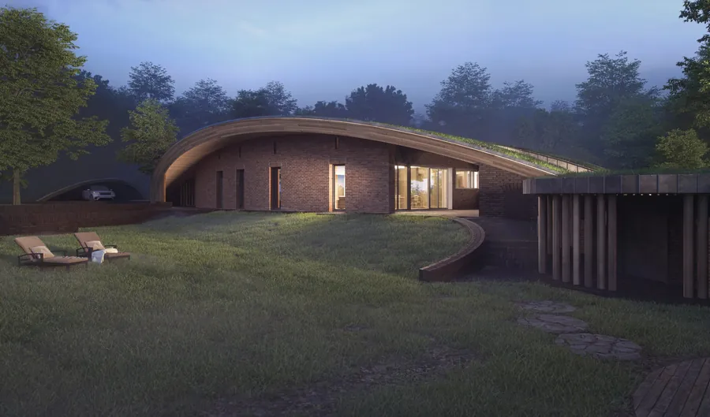
ArchiTerra III
Dom pod miękkim łukiem zielonego dachu, ściany z betonu konopnego, elewacja z rozbiórkowej cegły.
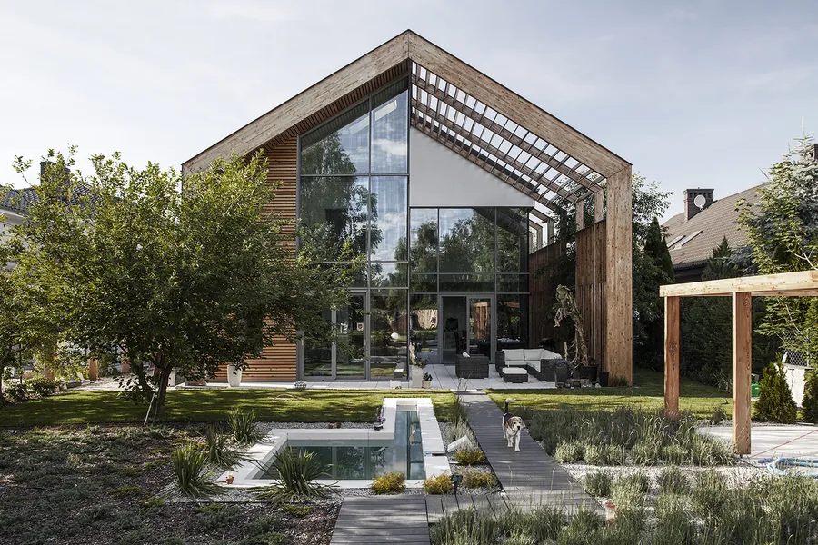
Projektuję domy pasywne, energooszczędne i budowane z naturalnych materiałów - od pierwszego szkicu na spotkaniu z inwestorem po nadzór nad budową.
Izba Architektów RP · uprawnienia bez ograniczeń od 2010 r.
Od domu schowanego pod zielonym dachem po zespół budynków z drewna masywnego w standardzie pasywnym.

Dom pod miękkim łukiem zielonego dachu, ściany z betonu konopnego, elewacja z rozbiórkowej cegły.
Dom, który do złudzenia przypomina zaadaptowaną starą stodołę. Za historycznym detalem - współczesna technika.
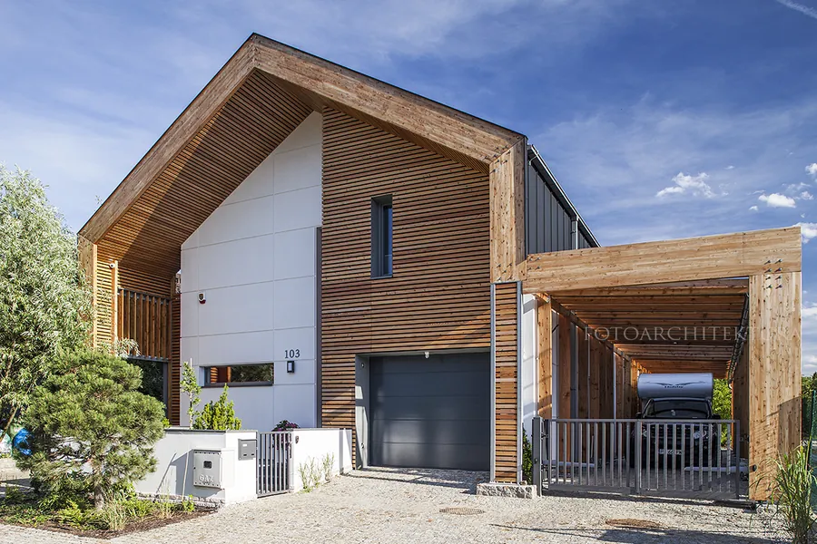
Dom jednorodzinny w standardzie budynku pasywnego, 197 m² z garażem.
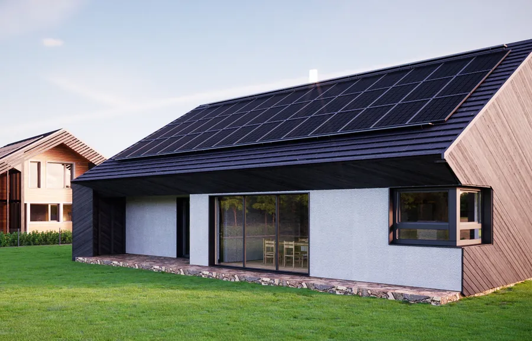
Pasywne domy o dodatnim bilansie energii: drewno masywne, celuloza, płyty ze słomy.
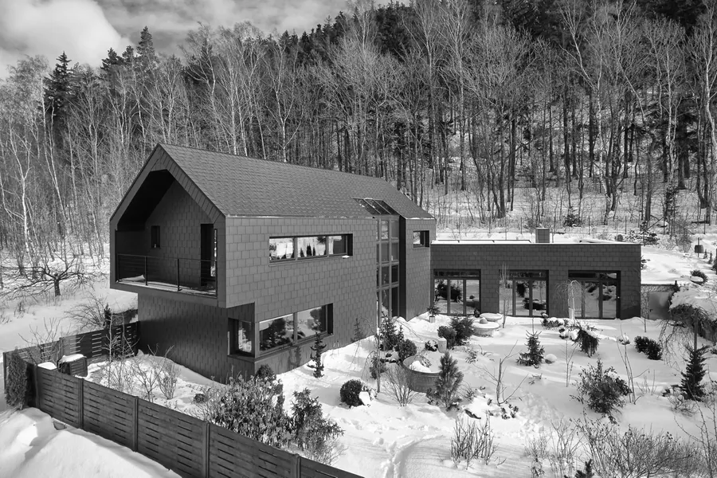
Dom jednorodzinny z garażem na mocno pochylonej działce.
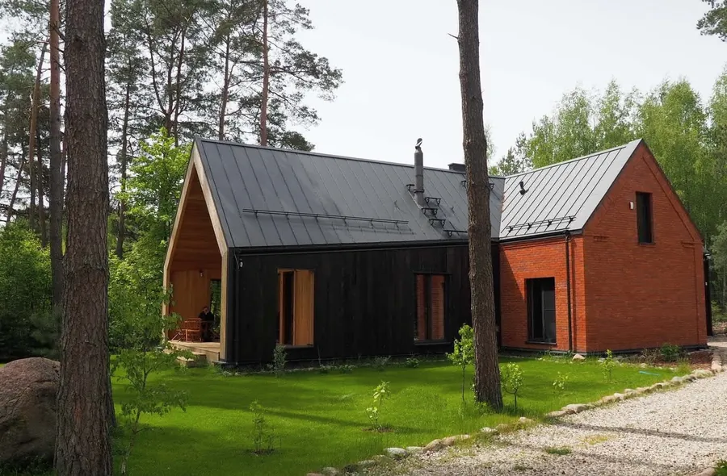
Dom letni wybudowany nad jeziorem.
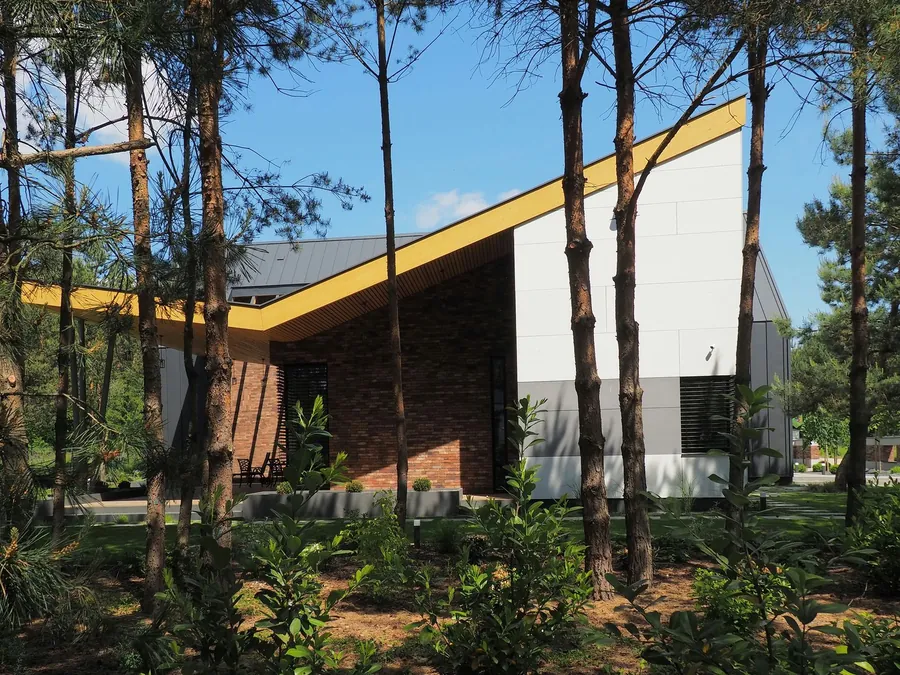
Dom jednorodzinny wśród wysokich sosen.
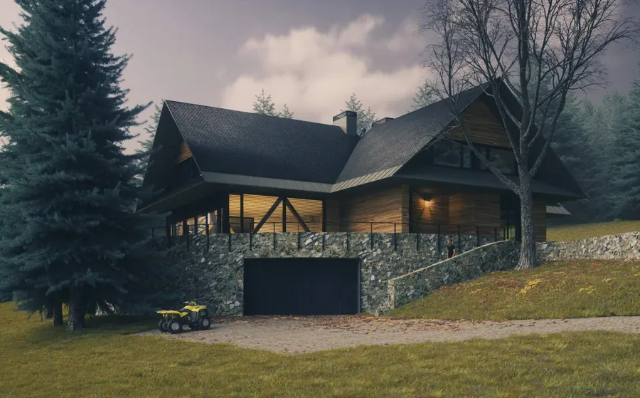
Dom wypoczynkowy niedaleko dolnej stacji kolei gondolowej.
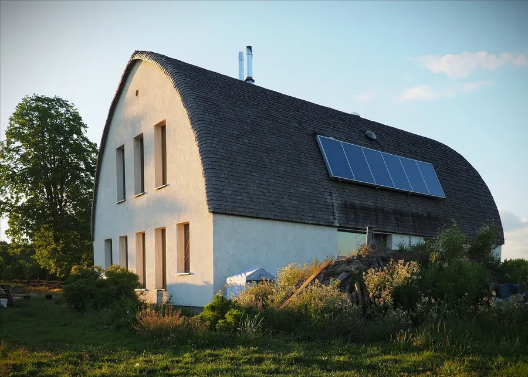
Dom pod łukowym dachem, z pomieszczeniami ułożonymi wokół centralnego trzonu kominowego.
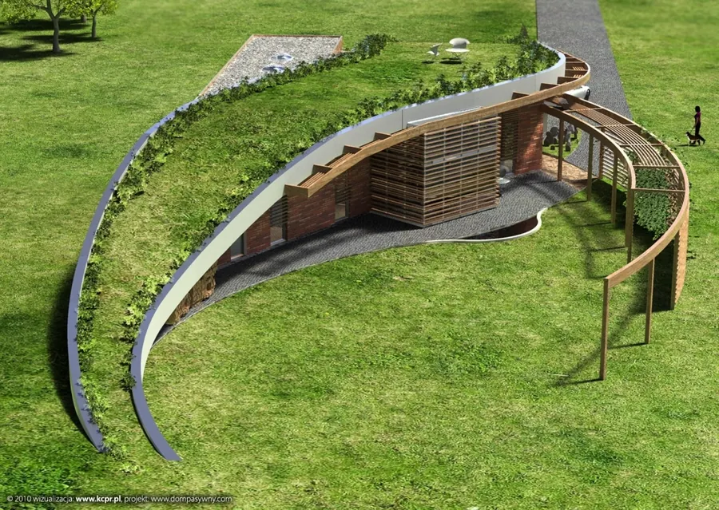
Dom wtopiony w teren, pod zielonym dachem.
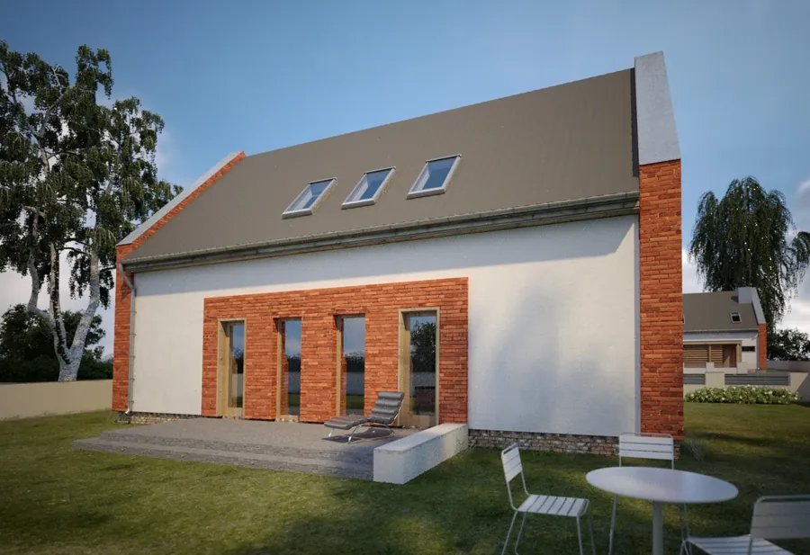
Mały, ekonomiczny dom dla pięcioosobowej rodziny, inspirowany wielkopolską wsią.
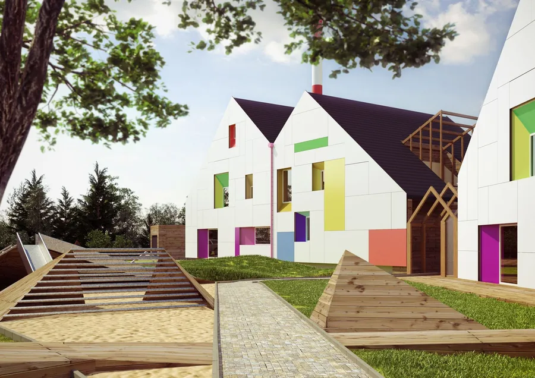
Prefabrykacja z drewna masywnego HBE w standardzie domów pasywnych.
Dzienna i roczna wędrówka słońca wyznacza bryłę, okna i układ pomieszczeń. Dopiero potem przychodzi forma.
W bezpośredniej bliskości obszaru Natura 2000, pośród rozproszonej wiejskiej zabudowy, powstał dom, który na życzenie inwestorów miał do złudzenia przypominać starą stodołę. Mało kto z odwiedzających wierzy, że to nie adaptacja dawnego budynku.
Dwie przesunięte względem siebie bryły - mieszkalna i gospodarcza - a między nimi wysoka, przeszklona sień ze stołem na 24 osoby i paleniskiem w ceglanej wnęce.
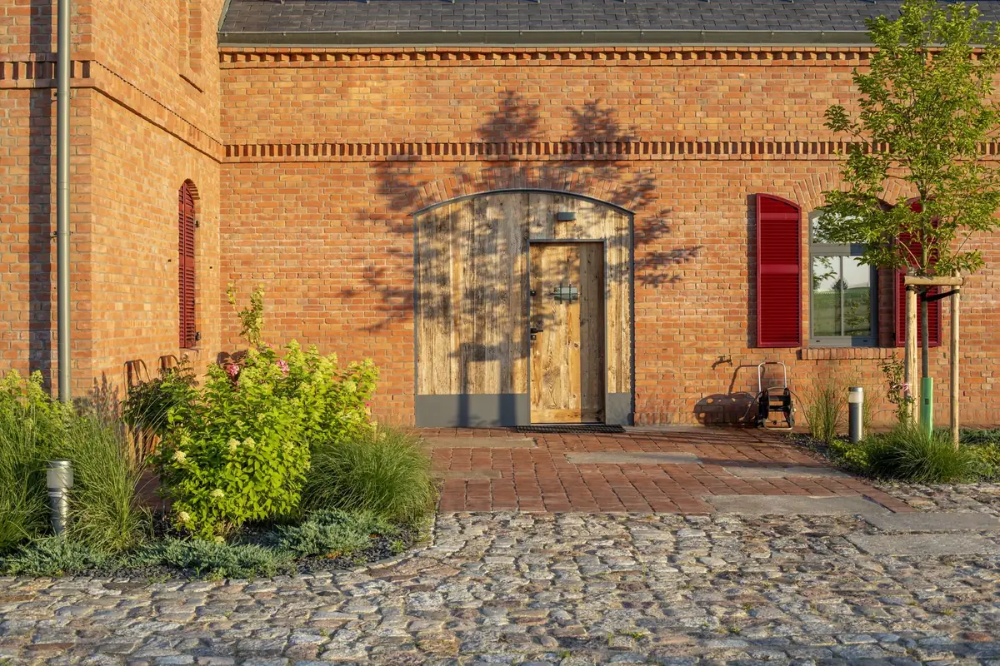
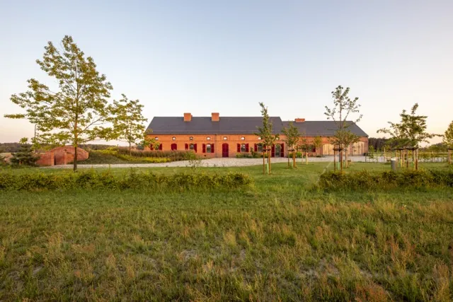
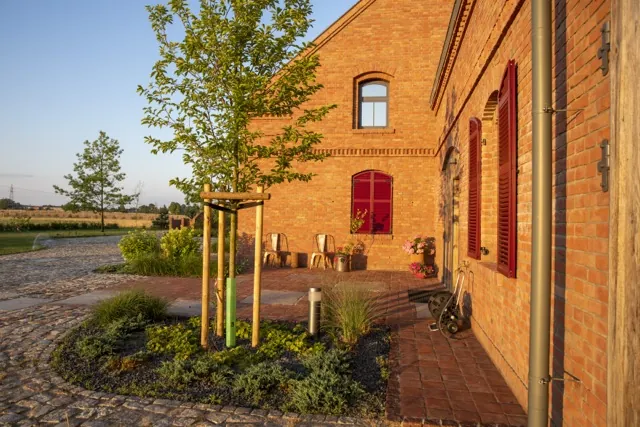
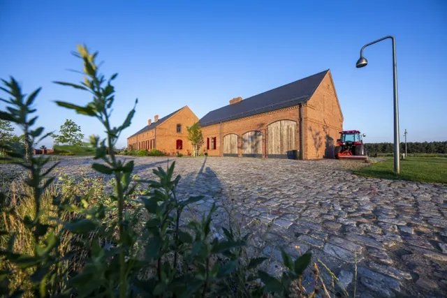
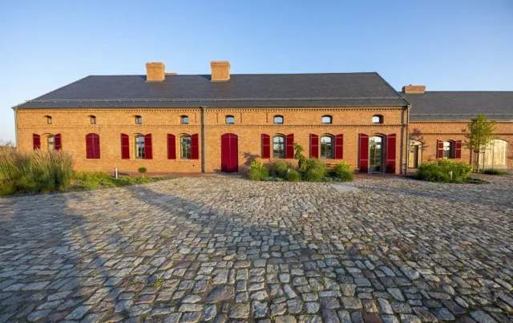
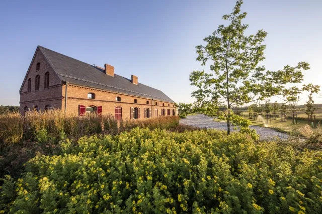
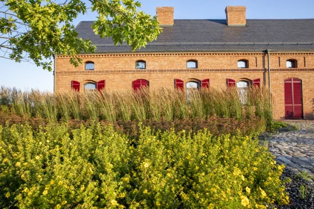
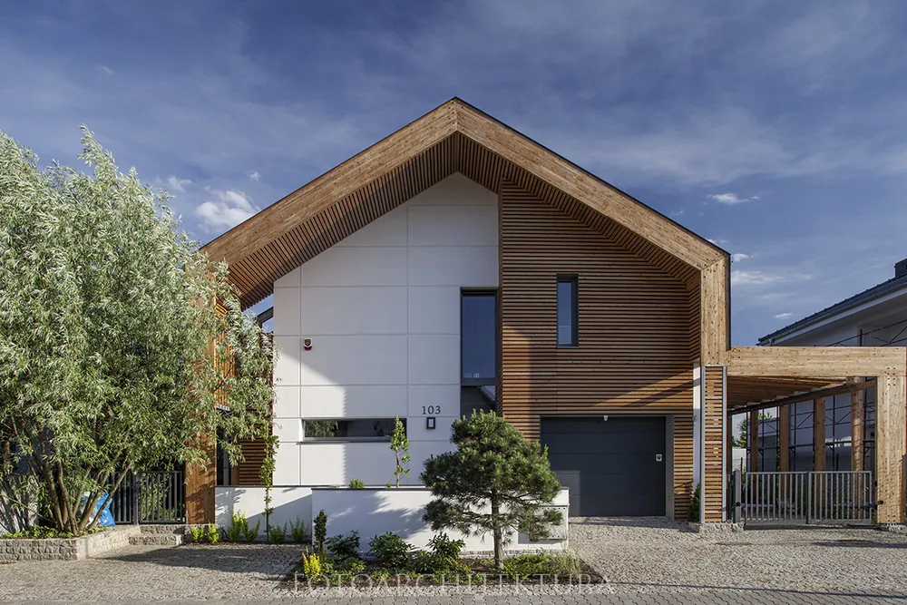
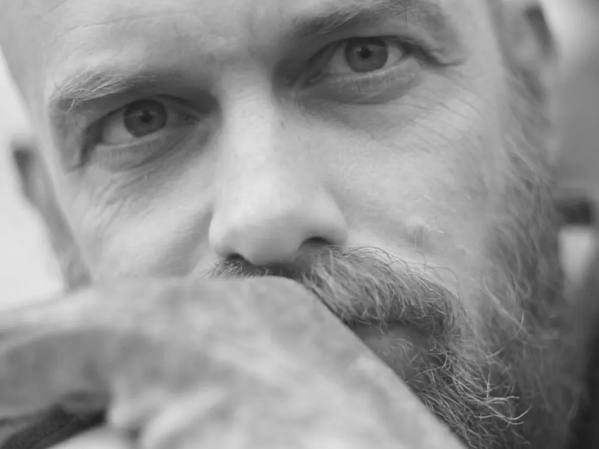
Architekt, członek Izby Architektów RP i Ogólnopolskiego Stowarzyszenia Budownictwa Naturalnego. Od początku pracy projektuje i nadzoruje budowę domów pasywnych, energooszczędnych i ekologicznych - jest autorem wielu budynków w standardzie pasywnym wg metodologii Darmstadt, w tym pierwszego w Polsce osiedla domów pasywnych.
O domach, materiałach i słońcu - z praktyki, nie z katalogu.
Dlaczego dom jednorodzinny to najmniej ekologiczny sposób na zamieszkanie - i kiedy może być inaczej.
CzytajDom pod zielonym dachem i warstwą ziemi, która stabilizuje temperaturę wnętrza przez cały rok.
CzytajBio_Arka_3 z materiałów naturalnych i pochodzących z recyklingu - na wyraźne życzenie inwestora.
CzytajWędrówka słońca jako główny wyznacznik bryły i przeszkleń domu.
CzytajCzarny dom na Truskawkowych Polach i podcień, który pracuje na roczny bilans energii.
CzytajNajlepiej zacząć od miejsca: gdzie leży działka, jak opada teren i skąd świeci słońce. Od tego zależy cała reszta.